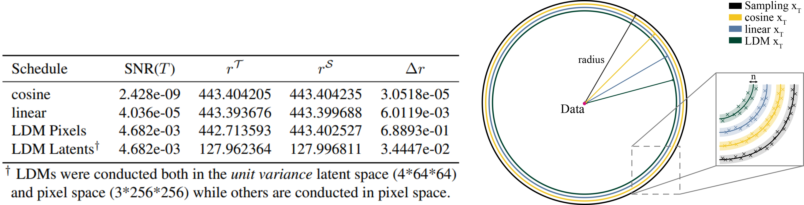
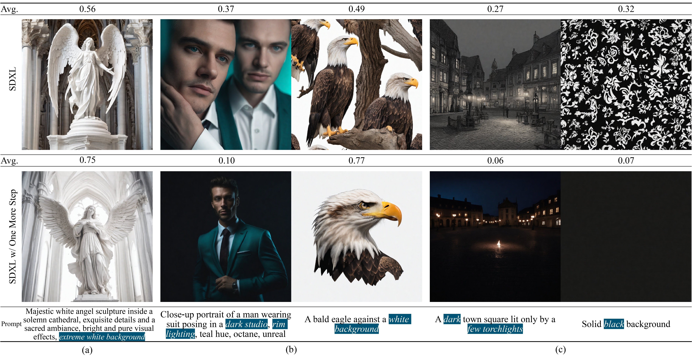
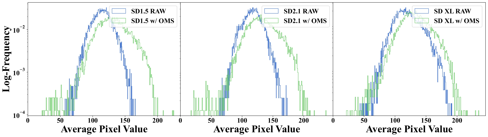
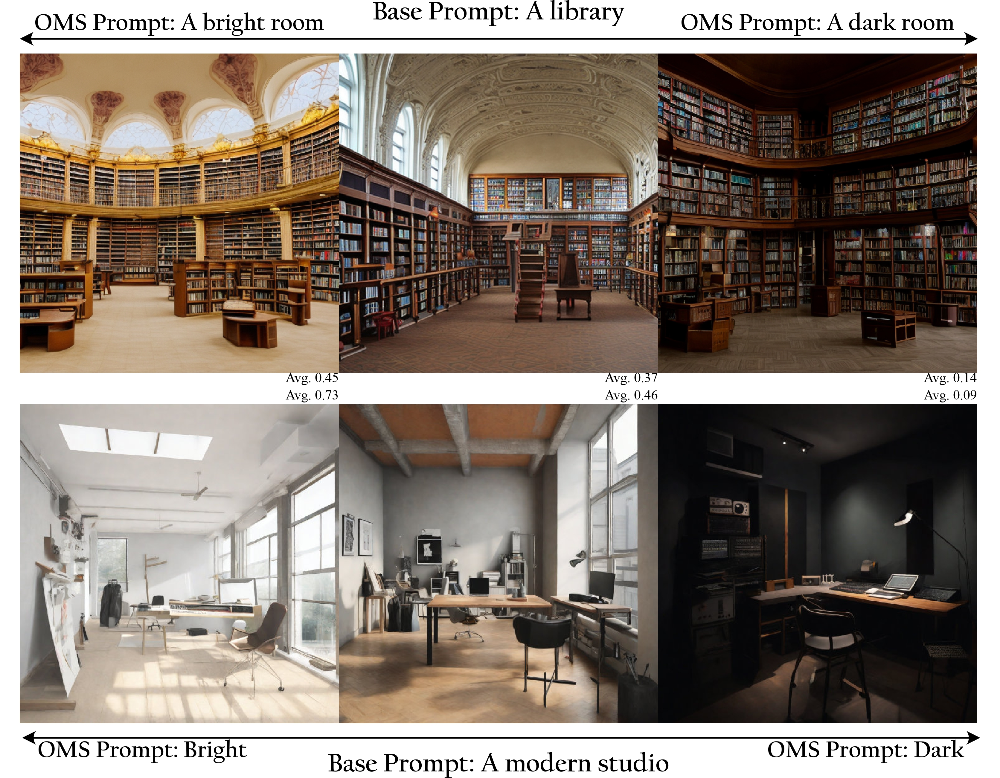
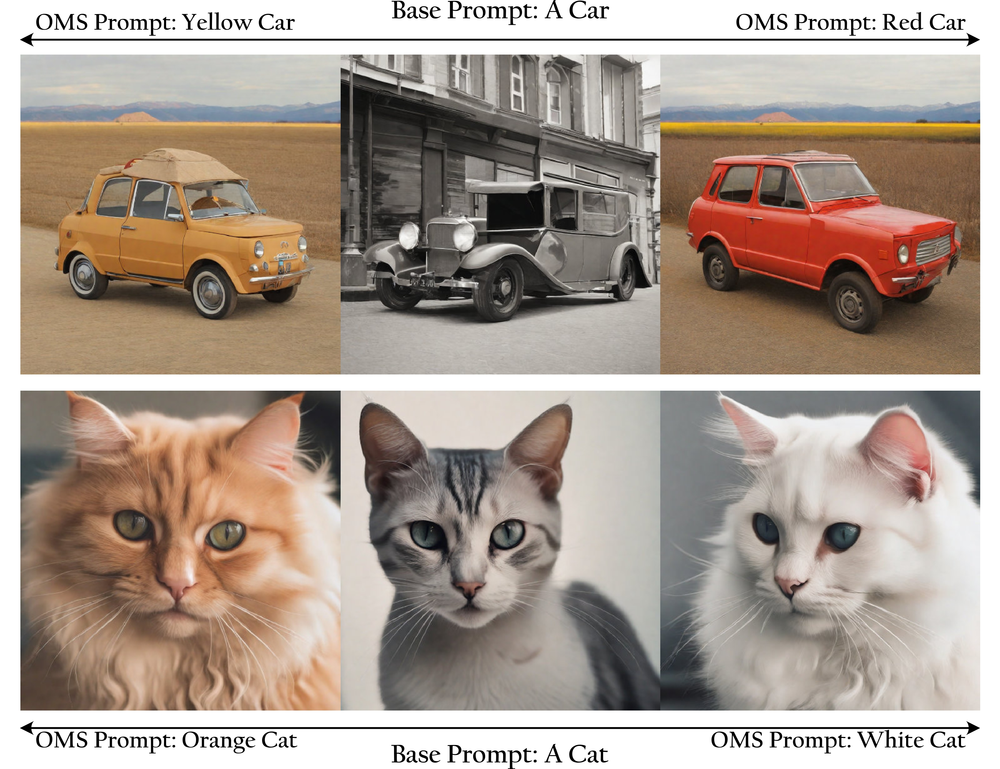

One More Step: A Versatile Plug-and-Play Module for Rectifying Diffusion Schedule Flaws and Enhancing Low-Frequency Controls

It is well known that many open-released foundational diffusion models have difficulty in generating images that substantially depart from average brightness, despite such images being present in the training data. This is due to an inconsistency: while denoising starts from pure Gaussian noise during inference, the training noise schedule retains residual data even in the final timestep distribution, due to difficulties in numerical conditioning in mainstream formulation, leading to unintended bias during inference. To mitigate this issue, certain ε-prediction models are combined with an ad-hoc offset-noise methodology. In parallel, some contemporary models have adopted zero-terminal SNR noise schedules together with $\mathbf{v}$-prediction, which necessitate major alterations to pre-trained models. However, such changes risk destabilizing a large multitude of community-driven applications anchored on these pre-trained models. In light of this, our investigation revisits the fundamental causes, leading to our proposal of an innovative and principled remedy, called One More Step (OMS). By integrating a compact network and incorporating an additional simple yet effective step during inference, OMS elevates image fidelity and harmonizes the dichotomy between training and inference, while preserving original model parameters. Once trained, various pre-trained diffusion models with the same latent domain can share the same OMS module.
Discrepancy between Training and Sampling
During training, the data fed into the model at timestep $T$ is not purely noise; it contains minimal yet data-relevant signals. These inadvertently introduced signals include low-frequency details, such as the overall mean of each channel. The model is trained to denoise by respecting the mean in these leaked signals. However, during the inference phase, sampling is performed using a standard Gaussian distribution. This inconsistency in the distribution between training and inference leads the model to produce samples with the mean value presented at $T$ when given zero-mean Gaussian noise, resulting in the manifestation of images with median values.
Visualization of Discrepancy
This discrepancy can be intuitively visualized in the high-dimensional Gaussian space by estimating the radius $r$ [Ye Zhu et al., 2023]. As shown in the table above, we evaluated the radius within the high-dimensional space for both the variables present during the training phase $r^{\mathcal{T}}$ and those during the inference phase $r^{\mathcal{S}}$. Additionally, drawing from [Avrim Blum et al., 2020; Ye Zhu et al., 2023], we provided a geometric illustration of concentration mass in the equatorial cross-section of high-dimensional Gaussians in the figure above, where its mass concentrates in a very small annular band around the radius. It can be observed that as the SNR increases, the distribution tends to be more data-centric, thus the radius of the distribution gradually decreases. This intuitively displays the discrepancy between training and inference.
Pipeline
We retain the entire pipeline of the current model, including both its parameters and the beta schedule. In contrast, we integrate a compact network and incorporate an additional simple yet effective step during inference. Specifically, in this step, we first train a network $\psi(\mathbf{x}_T^{\mathcal{S}}, \mathcal{C})$ to perform $\mathbf{v}$-prediction conditioned on $\mathbf{x}_T^{\mathcal{S}} \sim \mathcal{N}(0, \mathbf{I})$ with L2 loss $\Vert \mathbf{v}_T^\mathcal{S} - \tilde{\mathbf{v}}_T^{\mathcal{S}} \Vert^2_2$, where $\mathbf{v}_T^\mathcal{S} = -\mathbf{x}_0$ and $\tilde{\mathbf{v}}_T^\mathcal{S}$ is the prediction from the model. Next, we reconstruct $\tilde{\mathbf{x}}_T^{\mathcal{T}}$ based on the output of $\psi$ with different solvers. Subsequently, $\tilde{\mathbf{x}}_{T}^{\mathcal{T}}$ can be utilized as the initial noise and incorporated into various pre-trained models.
Geometric Explanation
As shown below, while directly sampling method requires sampling from a Gaussian distribution with a radius of $r^{\mathcal{T}}$, yet it samples from the standard Gaussian with $r^{\mathcal{S}}$ in practice. OMS bridges the gap $\Delta r$ between $r^{\mathcal{S}}$ and the required $r^{\mathcal{T}}$ through an additional inference step.
Quantitative Performance
| Model | FID↓ | CLIP Score↑ | ImageReward↑ | PickScore↑ | Precision↑ | Recall↑ | Density↑ | Coverage↑ | Wasserstein↓ | |
|---|---|---|---|---|---|---|---|---|---|---|
| SD1.5 | RAW | 12.52 | 0.2641 | 0.1991 | 21.49 | 0.60 | 0.55 | 0.56 | 0.54 | 22.47 |
| OMS | 14.74 | 0.2645 | 0.2289 | 21.55 | 0.64 | 0.46 | 0.64 | 0.57 | 7.84 | |
| SD2.1 | RAW | 14.10 | 0.2624 | 0.4501 | 21.80 | 0.58 | 0.55 | 0.52 | 0.50 | 21.63 |
| OMS | 15.72 | 0.2628 | 0.4565 | 21.82 | 0.61 | 0.48 | 0.58 | 0.54 | 7.70 | |
| SD XL | RAW | 13.14 | 0.2669 | 0.8246 | 22.51 | 0.64 | 0.52 | 0.67 | 0.63 | 11.08 |
| OMS | 13.29 | 0.2679 | 0.8730 | 22.52 | 0.65 | 0.49 | 0.70 | 0.64 | 7.25 |
Qualitative Results
In the following, we showcase results generated by Stable Diffusion series models, comparing instances with and without the OMS module. It is apparent that SD1.5, SD2.1, and SDXL tend to generate samples with medium brightness due to flawed scheduler designs. In contrast, the inclusion of OMS, designed to mitigate the discrepancy between training and sampling in diffusion models, results in generated images exhibiting a broader spectrum of brightness.

Additionally, we showcase example results of our One More Step method on various scenes. Traditional sampling methods (Top row) not only lead to (a) generated images converging towards the mean value, but also cause (b) the structure of generated objects to be chaotic, or (c) the theme to not follow prompts. Our proposed One More Step addresses these problems effectively without modifying any parameters in the pre-trained models.
Log-Frequency Histogram
We randomly select 10k captions from MS COCO and calculate the mean of corresponding images generated by SD1.5, SD2.1, and SDXL, both with and without OMS, and visualize the log-frequency distribution below. It is evident that our proposed OMS module promotes a distribution that is more widely covered.
The output of our proposed OMS model is associated with the training data of the diffusion phase. Once trained, various pre-trained diffusion models sharing the same latent domain can utilize the same OMS module. In the following, we illustrate the wide applicability of OMS to various pre-trained models, including Latent Consistency Models (LCM), the popular community model GhostMix 2.0 BakedVAE, and LoRA MoXin 1.0. Despite not being directly trained for these models, OMS can improve the generation of images with more diverse brightness for all of them.
Versatile for LCM

Versatile for LCM-LoRA
Samples from LCM, top row from original model and bottom row with OMS. SDXL with LCM-LoRA leans towards black-and-white images, but OMS produces more colorful images. It is worth noting the mean value of all SDXL with LCM-LoRA results is 0.24 while the average value of OMS results is 0.17.

Versatile for Custom Models
OMS is versatile and can be applied to other custom models, such as the popular community model GhostMix 2.0 BakedVAE and LoRA MoXin 1.0.


Modifying the prompts in the OMS module, while maintaining constant text prompts in the diffusion backbone model, can significantly influences the low-frequency characteristics of the generated images, such as luminance and color.
Luminance Control
When integrated with Classifier-free guidance (CFG), OMS can further subtly influence the low-frequency characteristics of the image in response to the given prompts.

Color Variations
 @article{hu2023step,
title={One More Step: A Versatile Plug-and-Play Module for Rectifying Diffusion Schedule Flaws and Enhancing Low-Frequency Controls},
author={Hu, Minghui and Zheng, Jianbin and Zheng, Chuanxia and Wang, Chaoyue and Tao, Dacheng and Cham, Tat-Jen},
booktitle={arXiv preprint arxiv:2311.15744},
year={2023}
}
Acknowledgements: Project page template is borrowed from DreamBooth.